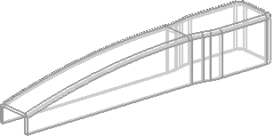
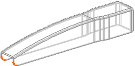

Create a shell
-
Click Shell
 .
.
-
From the Type list in the Shell dialog box, select Remove Faces, Then Shell.
-
Select the bottom face and the front vertical face of the solid to pierce.
-
In the Shell dialog box, type 1.5 in the Thickness box and click OK.

-
Blend the two small edges shown below using a radius of 5.
